Positive:Feed
Positive:Feed
A place for all of us who feel that the news is so messed up nowadays!
If you'd like to, you can

-
What went right: ‘historic’ US climate bill, plus more positive news
The US passed landmark climate legislation Efforts to wean the world’s second largest emitter off fossil fuels took a significant step forward this week, with US Congress approving legislation that a...
-
Scrap use-by dates, plus other smart solutions to food waste
Use-by dates increase the amount of food that gets thrown away, prompting some supermarkets to shelve them. It’s one of a number of simple solutions to food waste Before ending up on a European super...
-
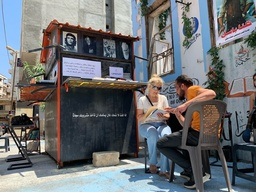
‘It’s therapeutic’: the book kiosk helping Syria reconnect with literature
Books have become a luxury that many Syrians can no longer afford. One man is on a mission to change that in the city of Tartus The sweltering summer temperatures keep most people off the streets in ...
-
The underwater sculptures tackling illegal trawling - Positive News
Huge marble artworks dropped into the Mediterranean in a radical plan to eliminate illegal fishing are finally allowing damaged ecosystems to regrow Deep into the sea off the coast of Talamone in Tus...
-
Rewilding: Community completes historic land buyout and vows to rewild
Help us continue to break the bad news bias Positive News is helping more people than ever to get a balanced view of the world – one that supports their wellbeing and empowers them to make a differen...
-
What went right: London’s ‘urban forest’, plus more positive news
London was promised thousands more trees A fortnight after wildfires licked London, mayor Sadiq Khan has announced a major tree planting drive in the capital. Around a fifth of London is under tree ...
-
What is net zero? Plus other climate jargon explained
This article has been created by Positive News and supported by Planet Mark The climate crisis is finally getting the airtime it deserves, bringing with it a whole new and confusing lexicon. Is it ou...
-
Glastonbury founder digs deep to build affordable homes
Festival founder Michael Eavis has donated Worthy Farm land and cash to build 52 green social homes. It’s just one of many creative grassroots solutions to Britain’s housing crisis Glastonbury founde...
-
‘A milestone’: Euro 2022 helps reboot campaign to get more kids playing
The Euro 2022 tournament, won by England, has energised a campaign to deliver boots to disadvantaged children across the UK “The brilliant Euro 2022 tournament has been a milestone in women’s footbal...
-
The cost of living crisis: what are governments doing to help?
1. UK The UK government wasn’t alone in resisting drastic intervention when prices began climbing last year, but the position soon became untenable. Energy bills jumped by an unprecedented 54 per cen...
-
Enormous Underground City Uncovered in Turkey
An enormous underground city has been discovered in Turkey that was created by persecuted Jews and Christians in Imperial Rome. At 74 acres, the ancient city is believed to have been inhabited as ear...
-
Giving Bits of Farmland Back To Nature Does Not Reduce Crop Yields, Landmark Study Shows
Contrary to what some people will say, nature-friendly methods of farming can significantly increase biodiversity without damaging food production, a long-term research project has found. In the post...
-
Good News in History, August 11
On this day in the year 3,114 BCE, the incredibly sophisticated “Long Count” calendar of the Mayan and other Mesoamerican people began, which is supposed by archeologists to be the supposed creation d...
-
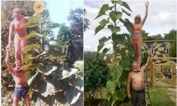
Couple’s Love Still Blooms 40 Years On, As They Recreate First Photo Posing Alongside 12ft Sunflower
A couple has proved their love is still blooming 40 years on by recreating a photo they took when they first got together posing alongside a 12ft sunflower. Paul Szewc and his wife Sandy met in 1982 ...
-
San Francisco Will Consider Ending All Prosecution of Psychedelic Drug Use
City lawmakers of San Francisco have introduced legislation that would significantly move forward the decriminalization of psychedelic substances. The bill will hopefully reduce non-violent drug pros...
-
Solar Company Gets Bright Idea to Cover Storage Facilities in Solar Panels—Brings Power to 1,400 Homes
New Jersey’s largest community solar owner and operator had the bright idea to cover storage space with solar panels. The project was seen through to its conclusion, and now an Extra Space Storage si...
-
Good News in History, August 10
Happy 75th Birthday to Ian Anderson MBE, the Scottish-born musician, singer-songwriter and multi-instrumentalist who was the lead “actor,” voice and flute player in Jethro Tull. Anderson as a singer-s...
-
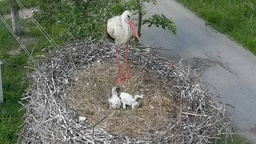
Ukraine Photo of Nesting Storks Returned Home Becomes a Symbol of Hope for Country
This picture from Ukraine of a stalwart mother stork nesting her two chicks has become a ‘symbol of hope’ for the country. The new nest was photographed on the outskirts of Kyiv—months after a violen...
-
Switzerland’s Brilliant Plan For Underground Cargo Delivery Tunnels to Reduce Traffic is Now Underway
The dream of a new and ambitious mode of freight transportation just took a big leap towards reality in Switzerland. On August 1st, planning stages commenced to build an automated tunnel network that...
-
First Effective Treatment for Back Pain Changes How Brain and Back Communicate
The first effective treatment for back pain which changes how the brain and back communicate has been developed by scientists. The 12-week course which focuses on the nervous system rather than pain ...
-
Good News in History, August 9
On this day in 1965, Singapore became the first country ever to gain independence unwillingly, after it was expelled from Malaysia. Affirmative action policies that granted privileges to Malays over o...
-

This Hero Dog-Lover Keeps Seniors and Their Pets Together With ‘Peace of Mind’
A dog rescue program specialized to help the dogs of the elderly has allowed hundreds of dogs to stay with their owners who could no longer physically take care of them. The program also takes in and...
-
Fourth Patient Seemingly Cured of HIV Through Wild Coincidence
The media continues the one-handed count of patients that seem to be cured of HIV as a man who has lived with the disease since the 1980s has been in remission for 17 months. The story is always the ...
-
‘Transformational’ Therapy Seems to Be a Cure For Hemophilia
A transformational therapy is changing the lives of patients with hemophilia B. Hemophilia is a mostly inherited genetic disorder that impairs the body’s ability to make blood clots, which naturally ...
-
Smartphones ‘Can Boost Memory Skills’ by Freeing Up Our Brains to Remember Other Things
Far from being dumb or making us dumb, the use of smartphones can actually boost people’s memory skills, according to a new study. Scientists say that rather than making us lazy or forgetful, the dig...
-
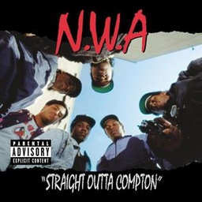
Good News On This Day in History – August 8
34 years ago today, N.W.A released their debut album Straight Outta Compton, which has been certified triple platinum and became the first rap album inducted into the Grammy Hall of Fame. Not merely d...
-

Diabetes Might Be Cured Using Healthy Stool Samples, Say Researchers at UCSD
Experiments found microscopic organisms transplanted into mice stopped the progression of diabetes—and the technique could end the need for painful insulin injections for human patients in the future....
-
Look For the Perseid Meteor Shower and Spectacular Saturn Show This Week
The Perseid meteor shower is one of the best shows all year for “shooting stars”. Though the Perseids have been active since July 14, the frequency of meteors hurtling through the sky is now heating ...
-
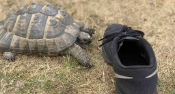
This Tortoise Attacks All the Black Shoes That Come Near Him- WATCH for a Laugh
A tortoise refuses to let people wear black shoes at the house—bullying his owner’s baffled grandson into wearing other colors or face a ‘painful’ attack. Tommy Shellby always makes a bee-line for an...
-
Good News in History, August 7
6 years ago today, Ichiro Suzuki joined the “3,000 Club” of collecting 3,000 hits across an MLB career in style, hitting a triple off the right-field wall of Coors Field against the Colorado Rockies. ...
-
Tigers in Nepal Come Back From Brink of Extinction With Historic 190 Percent Increase
July 29 was Global Tiger Day—and Nepal had some roaring-good news, reporting that their wild tiger population is 40 percent higher compared to data from just 2015. In fact, Nepal has nearly tripled t...
-
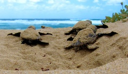
Georgia Sets Turtle Record With Most Loggerhead Nests Ever Counted on the Beach –LOOK
Loggerhead sea turtle nesting in Georgia hit a new high this week as the big reptiles beat their modern-day best for most nests on the state’s Atlantic Ocean beaches. With hatchings still surging, th...
-
Rare Singing Hummingbird Unexpectedly Rediscovered in Colombia Cloaked in Iridescent Blue and Green
A hummingbird species was rediscovered in Colombia after scientists had recorded no documented sightings for over 13 years. It was only the third time that a sighting of the Santa Marta sabrewing had...
-

Your Inspired Weekly Horoscope From Rob Brezsny: A ‘Free Will Astrology’
Our partner Rob Brezsny provides his weekly wisdom to enlighten our thinking and motivate our mood. Rob’s Free Will Astrology, is a syndicated weekly column appearing in over a hundred publications. H...
-
Good News in History, August 6
60 years ago today, Jamaica reserved for themselves full independence from both Great Britain and the Federation of the West Indies. The new state retained, however, its membership in the Commonwealth...
-
Common Weed May Be ‘Super Plant’ That Holds Key to Drought-Resistant Crops
A drought-proof weed may hold the key to feeding the world, according to new research. The common plant known as purslane, harbors important clues about how to create valuable drought-resistant crops...
-
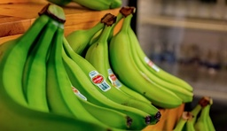
Starch in Green Bananas May Slash Risk of Some Cancers by Over 60%, Study Finds
A study has identified a starch in unripe bananas that can reduce the risk of some cancers by more than 60 percent—and scientists say it’s the first trial that points to a diet supplement that may be ...
-
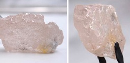
Miners Find Giant Pink Diamond in Angola – The Largest in 300 Years
Miners in Angola have uncovered another giant pink diamond just seven years after they opened the mine in 2015. The 170-carat stone is a historic find because it is believed to be the largest pink di...
-
Good News in History, August 5
77 years ago today, Plaid Cymru or the Party of Wales, was founded with the aim of supporting Welsh culture in government as the progress of the 20th century led to fears that the Welsh language would...
-
Mother and Daughter Become Co-pilots on Southwest Flight: ‘It’s been a dream come true’
Southwest Airlines announced its first-ever mother/daughter pilot duo, after Captain Holly Petitt joined First Officer Keely Petitt in the cockpit. Mother Holly Petitt started her aviation career fre...
-
Parts of the Great Barrier Reef Show Highest Coral Cover in 36 Years
The northern and central Great Barrier Reef have recorded their highest amount of coral cover since the Australian Institute of Marine Science began monitoring 36 years ago. Published today, the grou...
-
3-Foot Giant Tortoise Saved From Train Tracks Thanks to Determined Woman Who Spotted the Escapee
Train services bound for Cambridge, England, were halted to rescue a giant tortoise that had strayed onto the tracks. Clyde the tortoise was spotted walking the rail line, but the report was initiall...
-
Good News in History, August 4
97 years ago today, the Rodin Museum opened in Paris, containing works left to the state by the famous sculptor Pierre Auguste Rodin. Centered in the Hotel Biron, Rodin wrote in 1909, “I bequeath to t...
-
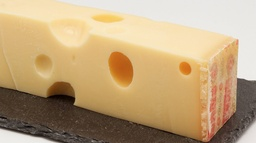
Trendy Type of Norwegian Cheese May Stave Off Bone Thinning, Shows New Study
Just a small portion of Jarlsberg can help stop bones getting weaker without boosting cholesterol, according to new findings. Researchers say health benefits are unique to the Nordic dairy product an...
-
Priceless Lost Jewels From Legendary Maravillas Shipwreck Are Finally Found in Bahamas
A sunken crown jewel hidden in The Bahamas since 1656—the shipwrecked remains of the Spanish galleon Nuestra Señora de las Maravillas (Our Lady of Wonders)—goes on display this week for the first time...
-
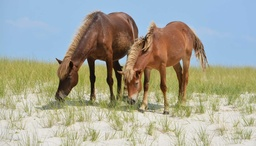
New DNA From a Tooth Confirms Famous Wild Ponies in Maryland Descended From Spanish Shipwreck
Wild feral horses have roamed freely across an island off the coast of Maryland and Virginia for hundreds of years, but exactly how they got there has remained a mystery. Now, in a new study, ancient ...
-
Good News in History, August 3
30 years ago today, Clint Eastwood took “one last job” in Unforgiven, which debuted in theaters in Los Angeles. Co-staring Morgan Freeman and Gene Hackman, the film was an enormous success—on the fina...
-
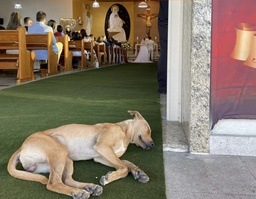
Stray Dog Crashes Couple’s Wedding – and Becomes Part of Their New Family
Douglas Robert and Tamíris Muzini were ready for their big day, when they would commit to celebrating happily ever after together, but Tamíris didn’t know there was someone else. As the blushing brid...
-
Music Helps Reconnect Elderly Patients with their Memories in New Study
When Paul McCartney wrote “Get Back,” he never would have predicted how useful or relevant the song would become for music therapists. The song’s refrain—“Get back to where you once belonged”—might a...
-
Fungi Species New to Science Discovered in Scottish Highlands
What happens when you take 216 teaspoons of dirt from 55 remote Scottish mountains? Discovery, that’s what. Scientists doing a survey of soil-born microorganisms in Scotland’s Cairngorms National Par...
-
Playing Sports at School Makes People Grittier and Harder Working
Playing sports at school makes people “grittier” and harder working, boosts the chances of achieving long-term goals, and having successful careers, say scientists. Oftentimes old fashioned notions a...
-
Good News in History, August 2
30 years ago today, at the 1992 Summer Olympics in Barcelona, Belarusian artistic gymnast Vitaly Scherbo, representing the Commonwealth of Independent States, became the first gymnast to win 6 gold me...
-
7-Year-Old Massiah Is Hero After Rescuing a Drowning 3-Year-Old – All on His Own
A 7-year-old from Sacramento was the unlikely savior of a 3-year-old toddler who would have certainly drowned without help. Last week 7-year-old Massiah Browne went down to enjoy the pool at the apar...
-
Study Shows Duolingo Learning Outcomes Are Comparable to University Classes
A study found that, despite being a 1-week wonder-kind-of-habit, people who study languages on Duolingo perform as well as University students with years under their belts. The most popular language-...
-
Livin’ Good Currency Ep. 18: Jen Saxton Translating Every Mom’s Experiences Into Baby Industry Dominance
The Lesson: Having her own children, encouraging better work—family life balance in the office, and understanding the difficulties and urgency parents go through when they need a service related to th...
-
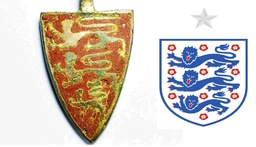
Archeologists Find 12th Century Pendant Resembling English National Football Badge Ahead of Historic Euro 2022 Final
Archeologists uncovered an ancient 12th century pendant resembling the England National team soccer badge ahead of the first European Championships Final in the women’s team’s history. The 920-year-o...
-
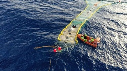
Quarter-Million Pounds of Plastic Cleared From Great Pacific Garbage Patch in Dutch Milestone
Last year, wiz kid Boyan Slat announced that “The Great Pacific Garbage Patch can now be cleaned,” after a prototype cleaning system proved successful. Since that deployment in August 2021, System 02...
-
Born 200 Years Ago Today, the Author of Moby Dick Died in Obscurity, His Novel a Failure—But His Genius Lived On
81 years ago today, the first Jeep was produced, a 4-wheel-drive vehicle born of wartime necessity that over the decades became a beloved mode of transportation for outdoor recreation lovers. Indelibl...
-
Large Study Suggests Doing Chores May Be Linked to a 21% Reduced Risk For Alzheimer’s Disease
Cooking, cleaning, and gardening may be linked to reducing your risk for developing Alzheimer’s by more than one-fifth (21%), according to new research. The study that looked at more than a half-mill...
-
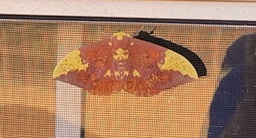
Imperial Moth Spotted With Name ‘Anna’ Spelled Out on its Back Below a Face
Put this in your file called, Mother Nature Did WHAT? A 25-year-old woman was stunned to spot a face and the name ‘Anna’ appearing on a moth’s back. Reagan Lewallen did a double-take when she let he...
-

VR tech helps international team of surgeons separate twins with fused brains
In miraculous medical news, virtual reality (VR) has helped surgeons successfully separate conjoined twins with craniopagus. Craniopagus describes a condition where twins are born with fused brains. I...
-
Burger King Austria makes plant-based their “new normal”
Burger King Austria’s new campaign is boldly challenging the public’s expectation of what “normal” ought to be. In a climate-conscious world, making plant-based the default standard for burgers is qui...
-
Clever sustainable living tips for renters
When it comes to making the world a greener, more sustainable place, homeowners have a lot of power. In the US, 40 percent of total energy consumption per year comes from buildings. This means when pr...
-
6 herbs with antiviral properties worth adding to your pantry
The pandemic has made everyone even more focused on safeguarding public health. While many cutting-edge medical advancements can help keep us safe, it’s also worth looking back on old-school methods o...
-
Resistance training fights muscle loss. Here are 3 ways to do more of it
We’ve know for a while that resistance training is key to longevity and health. In a recent study, researchers found that resistance training was effective in building lean muscle mass and slowing mus...
-
Think Global, Eat Local
“A garden is a solution that leads to other solutions. It is part of the limitless pattern of good health and good sense.” – Wendell Berry By Sadie Wilbur Dirty Hands, Happy Heart My love for all t...
-
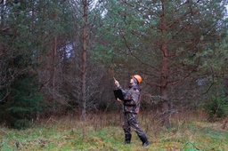
These are just some of the new job opportunities in a zero-emissions world
There is tremendous economic potential in the transition to a renewable energy future, but detailed descriptions of what these green jobs will look like aren’t always available. We’ve talked about the...
-

Study suggests an underripe banana a day lowers risk of a range of cancers
A new longitudinal study spanning almost two decades has produced some intriguing results regarding resistant starch. What you ask, is ‘resistant starch’? It is a digestion-resistant molecule present ...
-
Here’s how to dive into your local food scene
We all know that we should be eating local, yet it often falls to the bottom of the list—especially when we’re busy and on a budget. There’s more than meets the eye, though, with local food. It’s more...
-
Revealing the history of the earliest transoceanic seafarers
A study carried out by geneticists at Harvard University, in collaboration with Indigenous communities, has revealed five previously undocumented migrations around remote Pacific islands. These people...
-
Thousands of beagles saved from drug trials in US : UpliftingNews
Nearly 4,000 beagles are looking for new homes after what is thought to be one of the biggest ever dog rescue efforts in the US....
-
Man who built ISP instead of paying Comcast $50K expands to hundreds of homes : UpliftingNews
Press J to jump to the feed. Press question mark to learn the rest of the keyboard shortcuts Search within r/UpliftingNews r/UpliftingNews r/UpliftingNews...
-
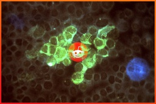
The Reddit Group Helping to Fund Herpes Vaccine Research : UpliftingNews
Press J to jump to the feed. Press question mark to learn the rest of the keyboard shortcuts r/ UpliftingNews...
-
Ukraine wins Chess Olympiad: Brave women from war-torn nation put a smile on world’s face : UpliftingNews
Press J to jump to the feed. Press question mark to learn the rest of the keyboard shortcuts Search within r/UpliftingNews r/UpliftingNews r/UpliftingNews...
-
Donations pour in after Michigan town defunded library over LGBTQ books : UpliftingNews
This thread has been locked by the moderators of r/UpliftingNews New comments cannot be posted...
-
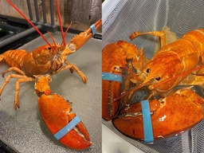
Cheddar, meet Biscuit. Rescue of second 1-in-30-million rare lobster from Red Lobster is raising questions about species 'abnormality.' : UpliftingNews
Press J to jump to the feed. Press question mark to learn the rest of the keyboard shortcuts Search within r/UpliftingNews r/UpliftingNews r/UpliftingNews...
-
There is hope. : UpliftingNews
We just need to keep up the non stop pressure to get world governments to understand. This is a global human issue. We have the power to save ourselves. Fight the good fight....
-
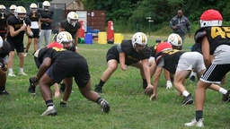
High school football player excels on field despite limb difference : UpliftingNews
Press J to jump to the feed. Press question mark to learn the rest of the keyboard shortcuts Search within r/UpliftingNews r/UpliftingNews r/UpliftingNews...
-
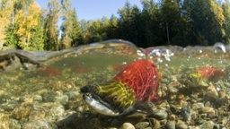
Commercial fishers and wild salmon advocates celebrate large returns to B.C. waters : UpliftingNews
Press J to jump to the feed. Press question mark to learn the rest of the keyboard shortcuts Search within r/UpliftingNews r/UpliftingNews r/UpliftingNews...
-

African lioness at Oklahoma City Zoo is pregnant : UpliftingNews
Press J to jump to the feed. Press question mark to learn the rest of the keyboard shortcuts Search within r/UpliftingNews r/UpliftingNews r/UpliftingNews...
-
From 300,000 rabbits to none: a Southern Ocean island is reborn : UpliftingNews
Press J to jump to the feed. Press question mark to learn the rest of the keyboard shortcuts Search within r/UpliftingNews r/UpliftingNews r/UpliftingNews...
-
Guinness-fuelled man becomes first to run entire length of Ireland in one day, in support of WWF : UpliftingNews
Guinness-fuelled man becomes first to run entire length of Ireland in one day, in support of WWF...
-
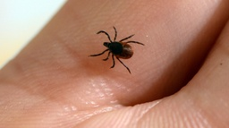
A Lyme disease vaccine is in its final clinical trial : UpliftingNews
Press J to jump to the feed. Press question mark to learn the rest of the keyboard shortcuts Search within r/UpliftingNews r/UpliftingNews r/UpliftingNews...
-
Being gay is not a disease, Vietnam tells its medical workers in bid to end anti-LGBTQ discrimination : UpliftingNews
Press J to jump to the feed. Press question mark to learn the rest of the keyboard shortcuts Search within r/UpliftingNews r/UpliftingNews r/UpliftingNews...
-
Woman in El Paso rescued from car moments before it's swallowed up by sinkhole : UpliftingNews
Press J to jump to the feed. Press question mark to learn the rest of the keyboard shortcuts Search within r/UpliftingNews r/UpliftingNews r/UpliftingNews...
-
As war rages back home, Russian groom, Ukrainian bride tie the knot in Dharamsala, India : UpliftingNews
Press J to jump to the feed. Press question mark to learn the rest of the keyboard shortcuts Search within r/UpliftingNews r/UpliftingNews r/UpliftingNews...
-
12yo boy with his bodyboard saved a family of four from Drowning in the sea : UpliftingNews
Press J to jump to the feed. Press question mark to learn the rest of the keyboard shortcuts Search within r/UpliftingNews r/UpliftingNews r/UpliftingNews...
-
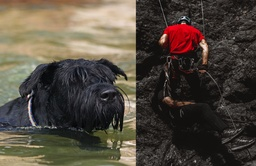
Explorers in 22-mile cave accidentally find dog missing for two months : UpliftingNews
Press J to jump to the feed. Press question mark to learn the rest of the keyboard shortcuts Search within r/UpliftingNews r/UpliftingNews r/UpliftingNews...
-
Oklahoma officially names American Quarter Horse as state horse : UpliftingNews
Press J to jump to the feed. Press question mark to learn the rest of the keyboard shortcuts Search within r/UpliftingNews r/UpliftingNews r/UpliftingNews...
-
Why Scotland Is Opening a Dementia Center in a National Park : UpliftingNews
Press J to jump to the feed. Press question mark to learn the rest of the keyboard shortcuts Search within r/UpliftingNews r/UpliftingNews r/UpliftingNews...
-
There was a 25% increase in the population of the bulky flightless kākāpō parrot of New Zealand in the last year. The total is now 252 birds whilst in 2002 there were only 86. With the help of the Nga
There was a 25% increase in the population of the bulky flightless kākāpō parrot of New Zealand in the last year. The total is now 252 birds whilst in 2002 there were only 86. With the help of the Nga...
-
Bangor man honored for 6 decades of service to Greyhound : UpliftingNews
Press J to jump to the feed. Press question mark to learn the rest of the keyboard shortcuts Search within r/UpliftingNews r/UpliftingNews r/UpliftingNews...
-
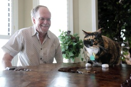
'Guard cat' credited with preventing would-be robbery : UpliftingNews
Press J to jump to the feed. Press question mark to learn the rest of the keyboard shortcuts Search within r/UpliftingNews r/UpliftingNews r/UpliftingNews...
-

Colorado to end sales tax for period products, diapers this week : UpliftingNews
Press J to jump to the feed. Press question mark to learn the rest of the keyboard shortcuts r/ UpliftingNews...
-
US returns to Cambodia dozens of antiquities looted from historic sites : UpliftingNews
Press J to jump to the feed. Press question mark to learn the rest of the keyboard shortcuts Search within r/UpliftingNews r/UpliftingNews r/UpliftingNews...
-
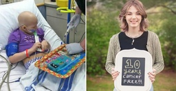
Here’s the miraculous story of a teen cured of cancer after receiving groundbreaking therapy
In 2010, then 5-year-old Emily Whitehead had just gone to her annual checkup and was declared healthy. But a week later, Emily’s mom, Kari, noticed that her daughter had bruises on odd parts of her b...
-
I’ve read famous last words from brilliant people in history, my mom’s not exactly poetry
On a trip back to my old hometown, I drove out to the senior’s residence to spend some time with my Mom. I hadn’t seen Mom in almost a year. My sisters, who have been there with her on her gradual de...
-
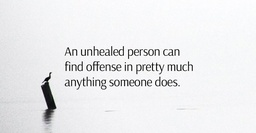
Each day you get to decide which one you will be
An unhealed person can find offense in pretty much anything someone does. A healed person understands that the actions of others have nothing to do with them. Each day you get to decide which o...
-
This is what happens when you put a group of introverted dogs together
Dogs can be a lot like humans, and this viral TikTok proves just how true that is. Not everyone likes social gatherings, and if these introverted dogs could talk, they would surely say, “Count us in!...
-
This couple bought a Home Depot shed and turned it into a livable home, then sold it for $312,000
A couple who flipped a Home Depot shed and sold it for a profit before buying their dream home is inspiring many people to go debt-free. It’s an excellent debt management pathway to financial freedom....
-

Wednesday Motivation: 20 Tips to Help You Through The Midweek Slump
Wednesday Motivation: 20 Tips to Help You Through The Midweek Slump When Wednesday rolls around your motivation to keep getting things done may have lessened considerably. I know that is sometimes t...
-

85 Progress Quotes to Motivate You to Keep Moving Forward Towards Your Dreams
85 Progress Quotes to Motivate You to Keep Moving Forward Towards Your Dreams Making progress towards your goals and dreams is sometimes a slow trip. It can contain pitfalls, mistakes and odd detour...
-
90 Hang in There Quotes to Renew Your Hope and Energy When You Need It
90 Hang in There Quotes to Renew Your Hope and Energy When You Need It Sometimes you fall. You fail, make a mistake or just have a setback. And sometimes life’s just unfair. No matter what you try. ...
-
How to Overcome Fear: 6 Powerful Strategies You Can Start Using Today
How to Overcome Fear: 6 Powerful Strategies You Can Start Using Today “When a resolute young fellow steps up to the great bully, the world, and takes him boldly by the beard, he is often surprised to...
-
160 Kindness Quotes to Help You Live a Happier and Kinder Life
160 Kindness Quotes to Help You Live a Happier and Kinder Life A simple but often underappreciated way to live a happier life is through kindness. So in this post I’d like to share the most powerful...
-
90 Four Word Quotes That Will Inspire You to Live Your Best Life
90 Four Word Quotes That Will Inspire You to Live Your Best Life Sometimes, keeping it short and simple is the best way to make what you’re saying powerful and easy to remember. So, in today’s post ...
-
How to Take Action Every Day: 5 Powerful Habits
How to Take Action Every Day: 5 Powerful Habits “It had long since come to my attention that people of accomplishment rarely sat back and let things happen to them. They went out and happened to thin...
-
Nurse Promised to Adopt the Son of a Terminally Ill Single Mom
After being diagnosed with liver cancer, a terminally ill single mom worried about what would happen to her son. Tricia Somers had an 8-year-old son named Wesley, so her main concern was finding someo...
-
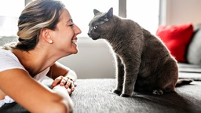
Japanese Research Reveals How Many Words Cats Can Understand
Dogs and cats are the most popular pets worldwide. Cats have been hanging out with humans for thousands of years. There’s lots of research on how dogs communicate with humans, but very little research...
-
How to Do a Scalp Massage for Faster Hair Growth
A scalp massage is a luxury many people forget they can indulge in. Not only does it feel good, but it also promotes hair growth and other beauty benefits. If you already use hand cream, facial moistu...
-

12 Habits That Beat Sadness Naturally
Depression is commonplace today. The overwhelming sadness you feel can be life-altering. Thankfully, you can overcome this sorrow and reclaim your life. While some people cannot function during a depr...
-

10 Reasons Why Optimistic Women Live Longer
Research reveals that optimistic women live longer than pessimistic people, on average. Other factors such as genetics and lifestyle play a role, of course, but a positive attitude can make a big diff...
-
10 Exercises to Reduce Back Fat
You’re perfect the way you are, but there’s nothing wrong with getting in better shape. If you’re worried about back fat, you can do exercises at home to target that area. You might notice back fat a...
-
10 Exercises for Sciatica Never to Ignore
When you have sciatica pain, your whole body is affected. The constant discomfort in your lower back can make even the simplest tasks difficult. The good news is that you may benefit from stretching e...
-
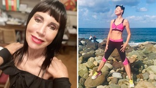
Meet a Glowing 72-Year-Old Woman in Peak Fitness
Norma Williams, a self-confident 72-year-old woman from the UK, reveals how she maintains peak fitness levels. Williams operates a holiday rental business in Italy, and being in great shape by working...
-
Experts Explain 5 Causes of the Great Resignation
Millions of Americans left their jobs during the pandemic, a phenomenon coined by Professor Anthony Klotz of Texas A&M as the “Great Resignation.” According to the Bureau of Labor Statistics, 47 milli...
-
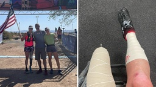
Amputee Inspires Millions by Completing Grueling Marathon
A 46-year-old female amputee became a worldwide inspiration after she completed a 140-mile marathon through the Sahara Desert. The grueling race has attracted thousands of runners for 34 years, called...
-

Unthinking, Fast and Slow
Donald Officer, MA '89, is a strategic thinking practitioner who melds problem solving research models to help clients anticipate unexpected scenarios and opportunities while pursuing what is most mea...
-

Sit Write Share launches today
Aren Cohen, MBA, MAPP '07 is a learning specialist working with academically, motivationally and emotionally challenged students in the leading private schools in New York City. As shown in her websit...
-

MAPP Magazine: The Power of Community
The mission of the MAPP Magazine is first to keep University of Pennsylvania Master of Applied Positive Psychology Program (MAPP) alumni connected, and second to share the wide range of our applicatio...
-

The Art of Insubordination: A Review
Lisa Sansom, MAPP '10, is the owner of LVS Consulting, an independent consulting firm that helps to build positive organizations. Lisa provide services such as individual and leadership coaching, team...
-

On Doing What We KNOW is Good for Us
Yashi Srivastava, MAPP '16 is a coach, teacher, and writer passionate about helping people cultivate inner peace. While Yashi began her career teaching computer programming, her life-long fascination ...
-

MAPP Magazine Articles on Positive Psychology Applications
Check out the latest articles online in MAPP Magazine. The mission of the MAPP Magazine is first to keep Penn MAPP alumni connected and second to share the wide range of our applications of positive p...
-

August 31 is Launch Day for The Business of Race
Tomorrow a new book will be launched: The Business of Race: How to Create and Sustain an Antiracist Workplace and Why It’s Actually Good for Business by Gina Greenlee and Margaret Greenberg. At first ...
-

New MAPP Magazine on Positive Humanities
The latest issue of MAPP Magazine, published by graduates of the MAPP Program at the University of Pennsylvania, is dedicated to the Positive Humanities. The Positive Humanities is an emerging field. ...
-

Second Wave of Positive Psychology
Marta Velázquez Gil is a psychologist and researcher. She has published research in scientific journals and both national and international congresses. Her biggest interest is research on cultural ter...
-

“You’re on mute!” On Having High-Quality (Zoom) Connections
Dr. Nico Rose (MAPP '14) is a professor for organizational psychology at International School of Management (ISM) in Dortmund, Germany. He worked for Bertelsmann, Europe's largest media corporation fr...
-

BUBBLE GUPPIES: FIN-TASTIC FAIRY TALES! Giveaway
Do your little ones love Bubble Guppies as much as mine? Then you’ll love my new giveaway! THE BUBBLE GUPPIES JOURNEY INTO ALL-NEW UNDERWATER QUESTS! BUBBLE GUPPIES: FIN-TASTIC FAIRY TALES! Join t...
-

Rugrats: Season 1, Volume 1 GIVEAWAY
It’s that time again… GIVEAWAY time! Tommy, Chuckie, Phil, Lil, Susie, and more of your favorite characters are back for more adventures in Rugrats: Season 1, Volume 1! Inspired by the 90’s classic...
-

The Narcissist's Prayer Explained
The Narcissist’s Prayer, written by Dayna Craig, has been making rounds around the Internet for a while now. When I first discovered it, I felt it in my body like a violent punch to my gut. In only 6...
-

5 Reasons to Stop Striving to Be Your Best Self
Do you often feel like you’re failing at motherhood? You’re not alone. A Care.com survey revealed that 80% of mothers in the United States feel stressed about getting everything done, 79% feel as if...
-

The Ultimate Guide to Storytelling in Content Marketing
I recently had the opportunity to speak again at Rocks Digital, a digital marketing conference in the Dallas Fort Worth area. I was invited to deliver a Rocks Talk, which is like a TEDx Talk, except ...
-

The J Team DVD Giveaway
It’s giveaway time again and this time, you can enter for a chance to win your very own copy of The J Team DVD. If you’re ready to show your sparkle, you can join JoJo Siwa and friends in The J Team!...
-

Swag Giveaway || The Bad Guys Movie
Hi loves! My daughters and I watched The Bad Guys movie and it was a lot of fun. So I’m hosting a giveaway to celebrate the release of THE BAD GUYS which is now available on Digital, 4K, Blu-ray and...
-

Encourage Your Child to Think Differently with EUREKA!
My daughters and I feel so blessed that we were invited to screen the new Disney Junior sensation: EUREKA! “Eureka!” is the story of a young talented girl inventor way ahead of her time who lives in ...
-
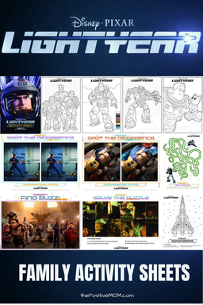
LIGHTYEAR Coloring Pages, Family Activities, and Dallas Ticket Giveaway
Well, hello loves! Disney and Pixar and their upcoming family film, LIGHTYEAR, which hits theaters June 17, invited me to partner with them to host a Fandango Code giveaway for 5 pairs of Fandango co...
-

Powerful St. Jude Prayer to Manifest Miracles
Before I share the St. Jude prayer you are looking for, I want to send you a hug. I can’t possibly know exactly how you feel, but I can definitely relate to feeling hopeless. I am grateful for God’s ...